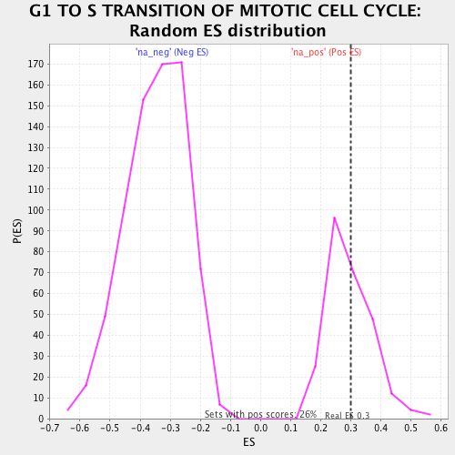

| | | Dataset | ranked_by_GAP.rnk |
| Phenotype | NoPhenotypeAvailable |
| Upregulated in class | na_pos |
| GeneSet | G1 TO S TRANSITION OF MITOTIC CELL CYCLE |
| Enrichment Score (ES) | 0.29955167 |
| Normalized Enrichment Score (NES) | 1.0138518 |
| Nominal p-value | 0.42023346 |
| FDR q-value | 0.73748076 |
| FWER p-Value | 1.0 |
Table: GSEA Results Summary
 Fig 1: Enrichment plot: G1 TO S TRANSITION OF MITOTIC CELL CYCLE
Fig 1: Enrichment plot: G1 TO S TRANSITION OF MITOTIC CELL CYCLE
Profile of the Running ES Score & Positions of GeneSet Members on the Rank Ordered List
| PROBE | GENE SYMBOL | GENE_TITLE | RANK IN GENE LIST | RANK METRIC SCORE | RUNNING ES | CORE ENRICHMENT | | 1 | BCK2 | | | 32 | 0.351 | 0.0805 | Yes |
| 2 | PPH21 | | | 74 | 0.273 | 0.1312 | Yes |
| 3 | SIC1 | | | 93 | 0.249 | 0.1918 | Yes |
| 4 | HRT1 | | | 131 | 0.209 | 0.2267 | Yes |
| 5 | CDC4 | | | 154 | 0.194 | 0.2680 | Yes |
| 6 | CDC53 | | | 241 | 0.138 | 0.2457 | Yes |
| 7 | MET30 | | | 248 | 0.138 | 0.2823 | Yes |
| 8 | CDC34 | | | 275 | 0.123 | 0.2996 | Yes |
| 9 | CLB6 | | | 373 | 0.067 | 0.2481 | No |
| 10 | PPH22 | | | 499 | 0.020 | 0.1619 | No |
| 11 | SAP185 | | | 639 | -0.043 | 0.0724 | No |
| 12 | CLB5 | | | 736 | -0.091 | 0.0287 | No |
| 13 | SAT4 | | | 782 | -0.107 | 0.0272 | No |
| 14 | RRD1 | | | 1056 | -0.217 | -0.1093 | No |
| 15 | SAP155 | | | 1221 | -0.320 | -0.1351 | No |
| 16 | PTK2 | | | 1277 | -0.352 | -0.0712 | No |
| 17 | SAP190 | | | 1365 | -0.478 | 0.0066 | No |
Table: GSEA details [plain text format]

Fig 2: G1 TO S TRANSITION OF MITOTIC CELL CYCLE: Random ES distribution
Gene set null distribution of ES for G1 TO S TRANSITION OF MITOTIC CELL CYCLE